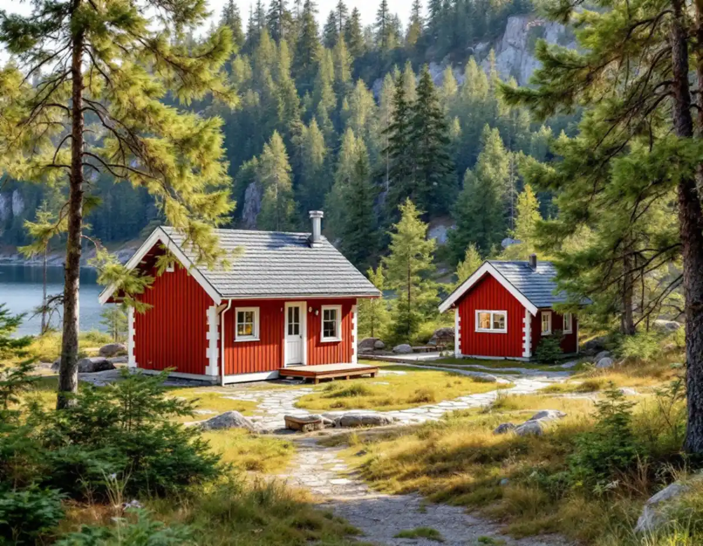
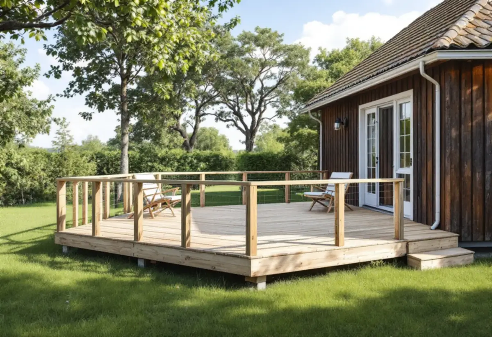

Tomten och potten
Vi går igenom vad som redan står på tomten och hur mycket som återstår av den lovfria ytan.
I Huddinge handlar många snickeriuppdrag om det som byggs vid sidan av huset: en altan, ett förråd, en gäststuga eller en tillbyggnad. Sedan december 2025 delar sådana byggnader på en gemensam pott, och kommunens kulturmiljöprogram ger råd om var på tomten de passar. Vi hjälper dig att se vad som får plats innan något byggs.

Del 2 av kommunens kulturmiljöprogram beskriver egnahemsområdena från 1910–40-talet med villor indragna från vägen och en stor förgårdsmark med äldre fruktträd och buskar, avskärmad med häck eller staket. Där råder programmet att garage inte placeras vid gatan, eftersom förgårdens öppna rum då sluts, och att plank bara sätts upp där det är bullerstört.
För småhusområdena från 1940–50-talet avråder programmet från tillbyggnader, större skärmtak och inglasade uteplatser mot gatan, och från stora altandäck och höga stödmurar på kuperade tomter. I områdena från 1960–80-talet bör carport, garage och andra komplementbyggnader inte stå på förgårdsmarken, och burspråk och större skärmtak mot gatan bör undvikas.
Råden för 1940–50-talets och 1960–80-talets områden gäller enligt programmet alla sådana småhusområden i kommunen, även de som inte ingår i ett utpekat kulturmiljöområde. All bebyggelse omfattas dessutom av varsamhetskravet i plan- och bygglagen.

Huddinge kommun skriver i sin genomgång av förändringarna i PBL att attefalls- och friggebodsreglerna har slopats och ersatts av regler med en pott för lovbefriade åtgärder. Enligt Boverket får den största byggnaden inom detaljplan vara 30 kvadratmeter och alla tillsammans 45 kvadratmeter, med högst 4 meter till nock. Byggnaden ska vara mindre än bostadshuset och stå minst 4,5 meter från tomtgränsen om grannen inte skriftligen medger något annat. Utanför detaljplan är gränserna 50 och 65 kvadratmeter.
Det som redan står på tomten räknas in. Har du ett attefallshus på 30 kvadratmeter och en friggebod på 15 kvadratmeter går det inte att bygga mer lovfritt inom detaljplan. Ska byggnaden få vatten, avlopp, eldstad eller ventilation krävs en anmälan.
Ett komplementbostadshus är en fristående bostad som ska uppfylla kraven för bostäder, med kök, toalett och dusch, och kunna användas utan att vara beroende av huvudbyggnaden. Mer om reglerna finns i guiden om attefallshus.
Enligt kulturmiljöprogrammet tog byggandet av sportstugor fart i Huddinge under 1930- och 40-talet, främst vid Orlången, Ådran, Kvarnsjön och Magelugnen, och på tidigare jordbruksmark vid Vårby, Glömsta och Länna gårdar. Semesterlagen 1938 gav alla arbetare rätt till två veckors semester. Stugorna är små och enkla, ofta röda med vita knutar, och har komplementbyggnader som gäststuga, vedbod, utedass och jordkällare.
För sportstugeområdena råder programmet att huvudbyggnaden hålls i en mindre volym och att komplementbyggnader uppförs fristående, en bit in på tomten. I praktiken passar en ny gäststuga eller vedbod ofta bättre än en stor tillbyggnad på själva stugan.
Äldre än stugorna är sommarvillorna i Masmo vid Albysjöns strand. Programmet beskriver sommarnöjena från 1880–1920-talet som stora trävillor med glasverandor, snickarglädje och spröjsade fönster. Ligger tomten nära vatten gäller strandskyddet, som enligt Boverket omfattar 0–300 meter från strandlinjen.
Från den 1 juli 2025 gäller nya byggregler som ersätter Boverkets byggregler, BBR. Kommunen förklarar att de nya reglerna beskriver vad som ska uppnås, till exempel att byggnaden ska vara energisnål och säker, i stället för exakt hur det ska göras. Övergångstiden löpte till den 30 juni 2026, och för ansökningar som kommer in efter den 1 juli 2026 gäller bara de nya reglerna.
För byggherren betyder det mer dokumentation. Kontrollplanen ska visa vilket regelverk som följs och hur kraven kontrolleras, och den ska vara anpassad till projektet. Kommunen råder att man identifierar de mest riskfyllda momenten och lägger kontrollerna där. Vid en tillbyggnad är det ofta anslutningen mot befintligt tak och vägg.
Kommunen påminner också om att fler åtgärder kräver bygglov i områden med riksintressen, i kulturhistoriskt värdefulla miljöer och nära totalförsvarets anläggningar, och att lovbefrielsen där ofta inte gäller. Den som är osäker kan boka tid med en bygglovshandläggare.
Vi går igenom vad som redan står på tomten och hur mycket som återstår av den lovfria ytan.
Vi föreslår en placering som fungerar med terrängen, grannarna och kommunens råd för husets epok.
Du får ritningar och, när det behövs, ett förslag till kontrollplan enligt de nya byggreglerna.
Plintar eller platta anpassas till marken, och stommen reses med skydd mot väder.
Utvändiga delar monteras, och vi samordnar el och VVS om sådant ingår.
Vi går igenom bygget med dig och lämnar en sammanställning att spara.
Rotavdraget gäller arbete på eller i anslutning till bostaden. Skatteverket godtar altaner och balkonger som är ihopbyggda med huset, och en tillbyggnad av förråd eller gäststuga som sitter ihop med huset kan också ge avdrag. En ny fristående byggnad, till exempel ett garage, eller en ny friggebod ger däremot inget avdrag.
Avdraget är 30 procent av arbetskostnaden och kan bli högst 50 000 kr per person och år; rot och rut har ett gemensamt tak på 75 000 kr. Vid om- och tillbyggnad ska det ha gått fem år från husets värdeår. En möblerad stuga som du äger och använder som fritidshus räknas också. Vi drar avdraget på fakturan.
Storlek, grundläggning och hur kuperad tomten är väger tyngst, liksom om byggnaden ska isoleras och få vatten och avlopp eller bara vara ett kallt förråd. En gäststuga på en sluttande skogstomt kräver mer markarbete än ett förråd på en plan egnahemstomt. Platsbesöket kostar inget, och därefter får du ett skriftligt kostnadsförslag.
Altan, väggar, dörrar och inredning.
Snickare i Stockholm →Takbyte, takbesiktning och plåtarbeten.
Takläggare i Huddinge →Stuvsta, Snättringe och Skogås.
Takrenovering i Huddinge →Egnahem, tegelvillor och stugor.
Målare i Huddinge →Från sportstuga till grupphus.
Badrumsrenovering i Huddinge →Nya golv och slipning.
Golvläggare i Huddinge →Panel, puts och isolering.
Fasadrenovering i Huddinge →Egnahem, grupphus och 70-talsvillor.
Fönsterbyte i Huddinge →Grupphus, egnahem och stugor.
Köksrenovering i Huddinge →Rännor, dagvatten och brutna tak.
Plåtslagare i Huddinge →Tyngre tak, stugor och landsbygd.
Takbyte i Huddinge →